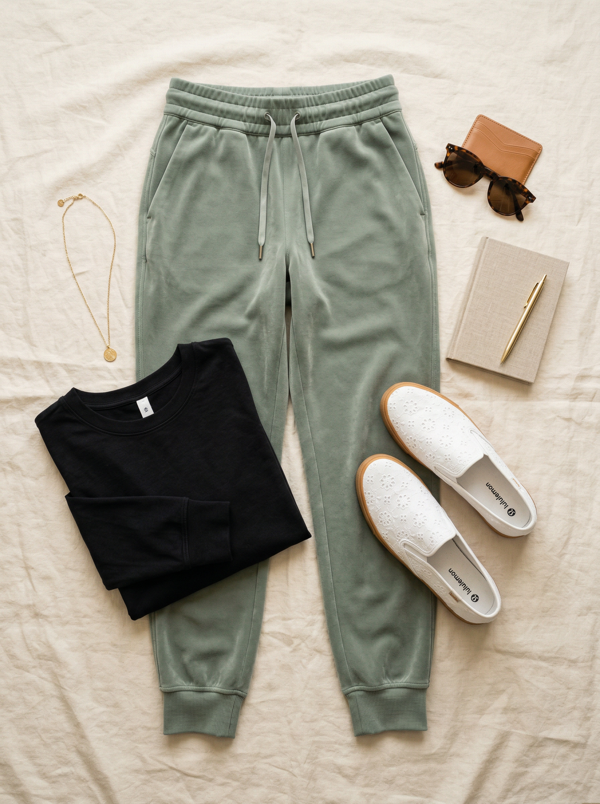
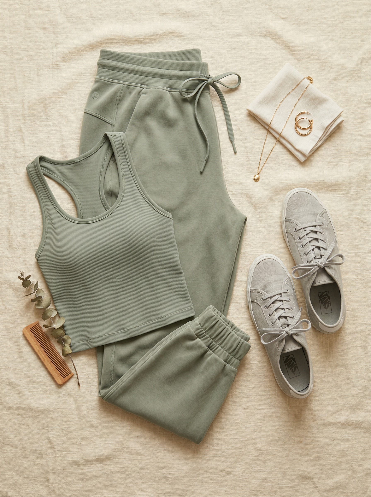
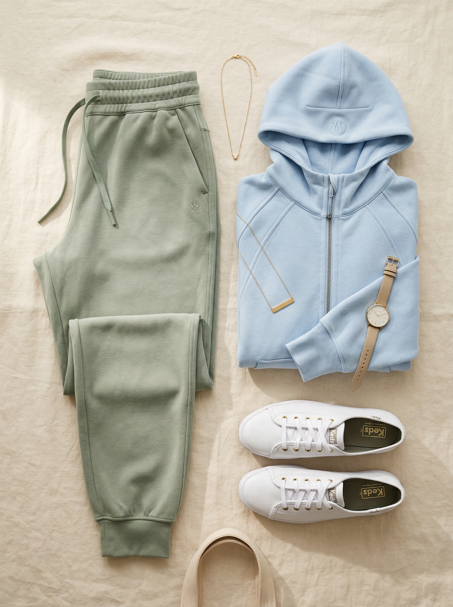

Lululemon
Softstreme Classic-Fit High-Rise Jogger
$99 $128
The jogger you'll never want to take off. Softstreme fabric is Lululemon's butteriest, most cloud-like fabric — it looks polished enough for brunch but feels like pajamas. High-rise waist is flattering on athletic builds, and the tapered leg keeps it sleek, not sloppy.
Shop NowWhy This Pick
You have ZERO joggers or casual pants in your wardrobe — your only casual bottoms are jeans. Softstreme is the most elevated casual pant Lululemon makes, and the sage Willow Leaf fills a real color gap. Perfect for Saturday morning coffee runs, Sunday soccer sidelines, and every errand in between. Machine washable and practically wrinkle-proof.
3 Ways to Wear It
Styled with pieces already in your closet

Look 1 — Sunday Errands Sorted
Black long sleeve tee (#45) + Softstreme Jogger + White eyelet slip-on sneakers (#508). The classic black-and-sage combo is effortless. Tuck in the front of the tee for a quick style moment. This is the grab-and-go look that still looks intentional.

Look 2 — Tonal Sage Moment
Sage green ribbed racerback tank (#53) + Softstreme Jogger + Light gray canvas sneakers (#509). Full tonal sage head-to-toe — like a real-life filter. The ribbed tank texture against the buttery Softstreme fabric is a beautiful contrast. Saturday farmer's market energy.

Look 3 — Cozy Pastel Pairing
Lululemon baby blue full-zip hoodie (#49) + Softstreme Jogger + White leather Keds sneakers (#510). Sage and baby blue is an unexpected but gorgeous pastel pairing. Two Lululemon pieces together look coordinated without being matchy. Soccer game sideline perfection.